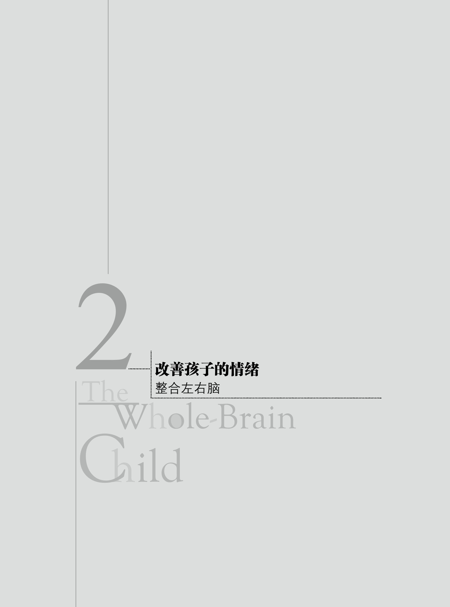

02 · 孩子发脾气时，先拥抱，后讲道理
上一章我们聊了"整合"——大脑各部分协同运作时，孩子是灵活、稳定的。你说孩子的爷爷离开时，你会陪他复述"爷爷去哪里了""为什么要回去"，讲几次之后他慢慢理解了。
你已经在用这一章要讲的方法了。西格尔把它叫做"经历分享，安抚情绪"——全脑教养第 2 法。但在他讲第 2 法之前，他先讲了一个更基础的东西：左脑和右脑不是同时上线的。孩子情绪崩溃的时候，负责逻辑的左脑已经下班了。
左脑和右脑：两个完全不同的"部门"
西格尔把大脑分成两个部分来讲，不是解剖学意义上的左半球和右半球——他说的是一种更直观的区分：
左脑爱秩序。它是逻辑的、语言的、线性的。左脑关心"事实是什么"——"我没有推她！我拉她来着。"它像法律条文。
右脑爱感受。它是情感的、非语言的、整体的。右脑读取面部表情、语气、身体姿势，关心"这段经历对我来说意味着什么"。它像法律精神。你直觉觉得"这个人不对劲"，是右脑在说话。

在孩子的成长过程中——尤其是 3 岁以前——右脑占据绝对主导。他们还没有掌握用逻辑和语言来表达感受的能力，完全活在当下。这解释了为什么一个两岁的孩子会毫无顾忌地蹲在人行道上看虫子，或者在你工作最忙的时候非要从椅子下钻到你身上来。逻辑、责任、时间观念——对他还不存在。

当一个孩子开始不停地问"为什么"时，左脑开始上线了——他想知道万事万物的因果关系，用语言把逻辑串起来。
关键不在于左脑或右脑哪个更重要。关键在于它们需要协同运作。 西格尔管这叫横向整合——左右脑通过胼胝体纤维束产生交流，作为一个整体运作。

两种危险：情绪泛滥和情感荒芜
当左右脑不能整合时，有两种典型的失败模式：
第一种：右脑接管——情绪泛滥。 凯蒂 4 岁，一直很喜欢上学。直到有一天她在学校生病了，老师打电话让爸爸接走。第二天开始，每天早上送上学变成了一场战争——哭闹、反抗、到了教室门口歇斯底里地喊"你走了我会死的！"
凯蒂的右脑把几件事情绑在了一起：学校 = 生病 = 爸爸离开 = 害怕。这个等式没有逻辑——生病是偶然的，不等于每次上学都会生病。但右脑不关心逻辑，它关心感受。凯蒂漂向了幸福之河的混乱一岸。
这也是你提到的自己的经历——你父亲的情绪暴躁，到你身上变成"很容易被调动情绪、会暴躁"。这是右脑在没有左脑平衡时接管了方向盘。
第二种：左脑接管——情感荒芜。 阿曼达 12 岁，和她最好的朋友发生了激烈的争执。但当有人问她这件事时，她耸耸肩，盯着窗外，说："我真的不在乎。我们不说话了，因为她惹恼了我。"她的表情冷漠而平静——但从她微微颤抖的下唇和细微的眨眼间，你能看到她右脑在发出求救信号。
阿曼达处理痛苦的方式是退回到左脑——退回到可预测、可控制、但情感一片荒芜的逻辑疆域。她漂向了幸福之河的刻板一岸。
西格尔的点很明确：情绪泛滥和情感荒芜都是病。 只靠右脑会被淹没，只靠左脑会枯竭。目标不是"别让孩子发脾气"——目标是帮他把左右脑整合起来，能同时感受和思考。
全脑教养第 1 法：聆听与关注
西格尔把"横向整合"变成了一个具体的两步操作法。
蒂娜（本书合著者）7 岁的儿子有一天晚上刚回房睡觉就又跑出来，烦躁地说："我要疯了！你从来没有在睡前给我晚安吻！你从来都没有对我好过！离我的生日还有十几个月！我讨厌做家庭作业！"
这段话没有任何逻辑。但那一刻，跟儿子辩论"我对你很好啊""生日我也没有办法让它快点到""家庭作业是必须做的"——这些左脑式的回应，都会撞在儿子右脑情绪的砖墙上。他用左脑说话的时刻已经过去了。
蒂娜没有。她把儿子拉到身边，抚摸他的后背，用安慰的声调说："有时候你真的很难受，对不对？但你是知道的，我永远不会忽略你的。你一直在我心里，你要明白你对我来说是独一无二的。"
儿子在她怀里慢慢放松下来，解释说有时候觉得弟弟获得了妈妈更多关注，家庭作业占了他太多课余时间。他平静之后，蒂娜简要地解释了他提出的具体问题——这时他愿意听了。不到 5 分钟，儿子回去睡觉了。
这就是"聆听与关注"——两步：
第 1 步：同右脑联结。 不管孩子的情绪在你看来多荒谬，对他来说都是真实且重要的。用你的右脑去接住他的右脑——身体接触、感同身受的表情、关爱的语气、不带偏见的倾听。这不是"纵容"，这是在帮一个正在溺水的人把头露出水面。先游向他，抱住他，帮他上岸，再告诉他下次不要游这么远。
第 2 步：引导至左脑。 孩子平静下来之后——左脑重新上线了——再讨论具体问题、解决方案、行为边界。这时候他才能听进去。情绪爆发的时候不是立规矩的好时机，平静下来以后才是。

上次你孩子从椅子下钻上来要看电脑——你说第一遍不行，第二遍带了情绪，第三遍直接抱走。孩子的反应是从刻板（故意对抗）一路滑到混乱（崩溃哭闹）。如果套用第 1 法：先停下来，右脑对右脑——蹲下来，让他感受到你看到了他的需求（他想靠近你），哪怕这个需求此刻不能被满足。等他情绪平复了，再用左脑解释"爸爸在工作，工作完就陪你"。先联结，后解决。
全脑教养第 2 法：经历分享，安抚情绪
这就是你在第 1 章 Q2 里提到的方法——爷爷奶奶离开后，你帮孩子复述"爷爷奶奶去哪里了""为什么要回去""你是不是不开心"——这正是西格尔说的"经历分享"。

为什么有效？ 孩子痛苦的时候，强烈的情绪和身体感觉充满了右脑。复述故事等于同时调用两个系统：左脑用词语和逻辑把事件顺序理清，右脑重访当时的情绪和身体感受。两边一起工作，大脑就在整合。
西格尔引用了研究：仅仅是给真实的感受指定一个名字或贴一个标签，就可以让右脑中情绪通路的活动平静下来。 这就是为什么"命名情绪"不是心理学的花架子——它是神经层面的干预。
9 岁的贝拉上厕所时马桶坏了，水涌得满地都是。之后她不敢冲马桶。爸爸道格没有回避这件事，而是陪女儿坐下来，反复复述水从马桶里溢出来的经过——包括她心里的恐惧。几次之后，贝拉的恐惧逐渐消退。
整个第 1 章开头那个玛丽和马可的故事——马可和保姆出车祸后，玛丽一遍遍帮他复述——这一章把它正式收进了工具箱：全脑教养第 2 法。
西格尔补充了几个操作要点：
- 不要强迫。 孩子不想说的时候，尊重他。可以开个头，请他来补充细节。给他时间。
- 一边做事一边聊。 搭积木、玩卡片、骑车的时候，比面对面坐着更容易让孩子开口。
- 可以画出来或写下来。 如果不想说，画画、写字也是复述。
- 不只是创伤。 这个方法的适用范围很广——从擦伤膝盖到失去宠物到在学校被欺负。
- 10 个月到 10 岁都适用。 对蹒跚学步的孩子，复述"你摔倒了，膝盖擦伤了，疼不疼？妈妈来看看"就是在调动左脑帮忙理清右脑的感受。
我们自己先要整合

西格尔在讲完两个方法之后，加了一段很重要的提醒：促进孩子大脑整合最好的方法，是我们自己的大脑更加整合。
一个在军人家庭长大的妈妈说她以前完全只用左脑——儿子哭的时候，她试着让他安静下来好解决问题。有时候没用，甚至让他哭得更厉害。后来她开始尝试"先联结，后解决"——抱着他，听他讲，帮他复述故事，然后才讨论怎么行动。她说："现在我会谨记——联结第一，解决第二。"
你在第 1 章 Q3 写到父亲的情绪暴躁——拿着枪对着你的头顶威胁。那种经历会在你自己的大脑里留下很深的布线。当你两岁的孩子在你工作时钻到椅子下面、不断试探你的边界——触发你的不只是他的行为，还有你右脑里那些旧的情绪记忆。你第一遍还平静，第二遍带上情绪，第三遍接近生气——这不是"控制不住脾气"，这是你的右脑在没人帮忙的情况下被拖进了一场它没准备好的风暴。
下一次可以试试：先让自己的左右脑整合。 意识到"我的情绪正在被触发，这不是单是孩子的问题"——右脑感受到情绪，左脑命名它——然后你才能用整合后的状态去接住他。
这一章的核心，三句话
- 孩子情绪崩溃时，左脑已经下班了。 右脑主导情绪，左脑负责逻辑，但 3 岁前右脑占绝对优势。发脾气时讲道理是双输——他的左脑听不见，你的左脑撞在他的右脑墙上。
- 全脑教养第 1 法：聆听与关注——先同右脑联结，再引导至左脑。 身体接触、共情语气、不带偏见的倾听（联结），然后才讨论问题、给出方案、设立边界（引导）。联结第一，解决第二。
- 全脑教养第 2 法：经历分享，安抚情绪——帮孩子复述痛苦经历。 复述同时调用左脑（理清事件、付诸语言）和右脑（重访情绪），是整合左右脑最有效的方式之一。
学习反馈
在飞书中回复本条消息，填写你的答复。